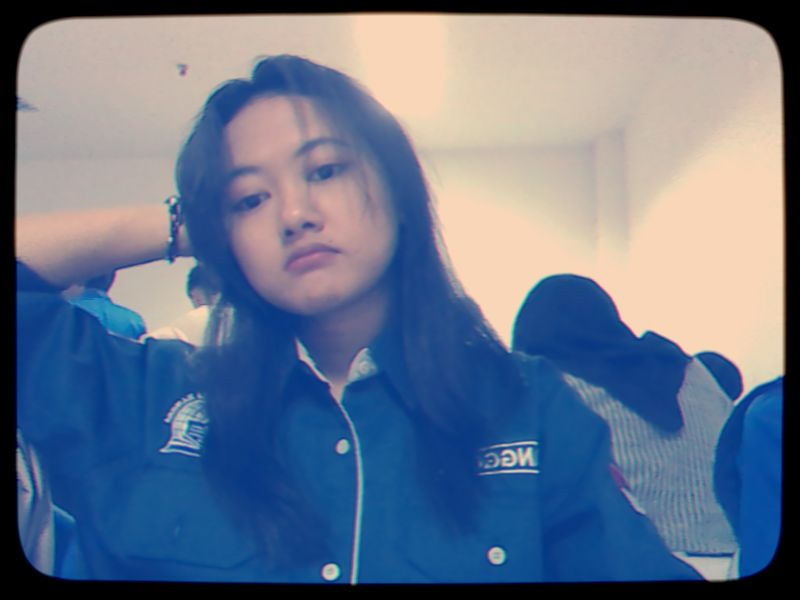

Deskripsi

Saya berasal dari Bekasi, Cikarang Selatan, saya sangat meyukai dunia musik, dan saya juga berminat mempelajari Web Development lebih dalam.
Halo! Saya Naysila Rahil Maulana, biasa di panggil Lana, saya mahasiswa Universitas Pelita Bangsa

Saya berasal dari Bekasi, Cikarang Selatan, saya sangat meyukai dunia musik, dan saya juga berminat mempelajari Web Development lebih dalam.

Pada Saat semester 1 saya membuat web sederhana sebagai langkah mengenalkan HTML dan CSS sebagai pembelajaran awal
Lihat
dan Pada semester 3 ini saya sangat tertarik mempelajari Mata Kuliah Pemrograman Web dengan Praktikum membuat Web sesuai modul dan menjalankan beberapa eksperimennya.
Lihat
Di semester 3 ini kita mempelajari lebih dalam tentang HTML, CSS dengan membuat beberapa Web sederhana.
Lihat